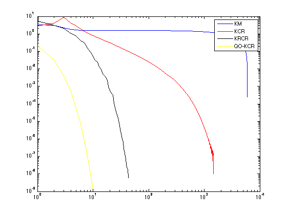
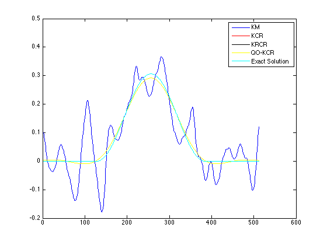

Convergence of the regularized form of the Column-Kaczmarz algorithm.
Demonstrates the change in the rate of convergence of the regularized form of the Column-Kaczmarz algorithm.
Contents
- Author & Reference
- See more for Regularization Tools dependency
- See more for AIRTools dependency
- Generate test problem
- Add noize to f vector
- Execute the Kaczmarz alg
- Some estimation perturbation
- One of the heuristic methods to select regularization parameter
- Execute the Kaczmarz-Column-Regularization (KCR) alg.
- Execute the Kaczmarz-Random-Column-Regularization (KRCR) alg.
- Execute the QO-Kaczmarz-Column-Regularization (QO-KCR) alg.
- Plot the results
Author & Reference
Ivanov Andrey, Graduate student, ssauivanov@gmail.com.
Dept. of Applied Mathematics, S. P. Korolyov Samara State Aerospace University (National Research University), Faculty of Computer Science, Samara, Russia.
- [1] A. I. Zhdanov, The method of augmented regularized normal equations, Computational Math- ematics and Mathematical Physics, 52 (2012), pp. 194-197.
- [2] A. I. Zhdanov, A. A. Ivanov, Projection Regularization Algorithm for Solving Linear Algebraic System of Large Dimension, Vestn. Samar. Gos. Tekhn. Univ. Ser. Fiz.-Mat. Nauki, 2010, Issue 5(21), pp. 309--312, (In Russian) http://www.mathnet.ru/php/archive.phtml?wshow=paper&jrnid=vsgtu&paperid=827&option_lang=eng
- [3] T. Strohmer and R. Vershynin, A randomized Kaczmarz algorithm for linear systems with exponential convergence, J. Fourier Analysis and Applications, 15 (2009), pp. 262-278.
- [4] G. P. Vasil'chenko and A. A. Svetlakov, A projection algorithm for solving systems of linear algebraic equations of high dimensionality, USSR Computational Mathematics and Mathematical Physics, 20 (1980), pp. 1-8.
- [5] V. A. Morozov, Methods of solving incorrectly posed problems, Springer Verlag, New York, 1984.
See more for Regularization Tools dependency
- [6] P.C. Hansen, Regularization Tools Version 4.1 (for MATLAB Version 7.3), http://www2.imm.dtu.dk/~pcha/Regutools/
addpath ('../libs/regu/');
See more for AIRTools dependency
- [7] P.C. Hansen, A MATLAB Package of Algebraic Iterative Reconstruction Methods (for Matlab Version 7.8 or later), http://www2.imm.dtu.dk/~pcha/AIRtools/
addpath ('../libs/AIRtools/AIRtools/');
Generate test problem
Discretization of the "famous" Fredholm integral equation of the frst kind deviced by D. L. Phillips, see more in [6].
[A,f,u_true] = phillips(512); %or may be shaw(512);
[m,n] = size(A);
Add noize to f vector
noize_value = 0.015; noize = randn(size(f)); noize = (noize/norm(noize)) * norm(f) * noize_value; d = (norm(noize) / norm(f)) * 100; fn = f + noize; N = [1:1:6000];
Execute the Kaczmarz alg
[x0 info0] = kaczmarz(A,fn,N); error_x0 = zeros(1,size(x0,2)); for i = 1:1:length(error_x0) error_x0(i) = norm(x0(:,i)-x0(:,end),2); end;
Some estimation perturbation
delta = norm(f-fn);
One of the heuristic methods to select regularization parameter
See more: V. A. Morozov, Methods of solving incorrectly posed problems, Springer Verlag, New York, 1984.
sigmaMax = max(svd(A));
alpha = ((sigmaMax^2)*delta/(norm(f)+delta));
options.stoprule.type = 'NR';
options.stoprule.epsilon = 10^-8;
options.alpha = alpha;
Execute the Kaczmarz-Column-Regularization (KCR) alg.
[x1 info1] = columnkaczmarz(A,fn,N,[],options); error_x1 = zeros(1,size(x1,2)); for i = 1:1:length(error_x1) error_x1(i) = norm(x1(:,i)-x1(:,end),2); end;
Execute the Kaczmarz-Random-Column-Regularization (KRCR) alg.
[x2 info2] = randcolumnkaczmarz(A,fn,N,[],options); error_x2 = zeros(1,size(x2,2)); for i = 1:1:length(error_x2) error_x2(i) = norm(x2(:,i)-x2(:,end),2); end;
Execute the QO-Kaczmarz-Column-Regularization (QO-KCR) alg.
[x3 info3] = qoptimalcolumnkaczmarz(A,fn,N,[],options); error_x3 = zeros(1,size(x3,2)); for i = 1:1:length(error_x3) error_x3(i) = norm(x3(:,i)-x3(:,end),2); end;
Plot the results
figure; loglog (1:1:length(error_x0), error_x0, 'b',... 1:1:length(error_x1), error_x1, 'r',... 1:1:length(error_x2), error_x2, 'k',... 1:1:length(error_x3), error_x3, 'y'); legend('KM', ... 'KCR', ... 'KRCR', ... 'QO-KCR'); figure; plot(1:1:length(x0(:,end)), x0(:,end), 'b', ... 1:1:length(x1(:,end)), x1(:,end), 'r', ... 1:1:length(x2(:,end)), x2(:,end), 'k', ... 1:1:length(x3(:,end)), x3(:,end), 'y', ... 1:1:length(u_true) , u_true , 'c'); legend('KM', ... 'KCR', ... 'KRCR', ... 'QO-KCR', ... 'Exact Solution'); 